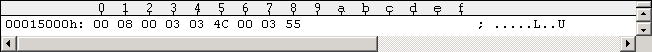
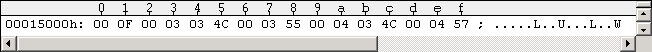
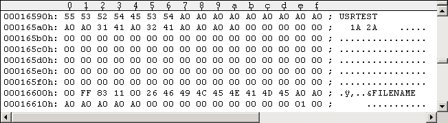
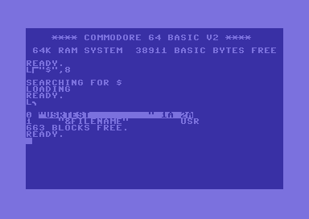

Main IndexGetting to the drive code entry point of an unknown protection (WinVice) The following three 1541 Kernal routines may be used to execute drive code in the 1541 memory: "$CAF8: Perform [M] - Memory command" "$CDA3: B-E block execute" "$E7A3: Perform [&] - USR file execute command" Kernal routines $CAF8 & $CDA3: Set breakpoints to this 1541 Kernal routines (
dev 8:,break caf8,break cda3) and then load a game (e.g.LOAD"TITLE",8,1). When WinVice breaks, the current "Memory command" (M-R,M-W,M-E,B-E) will then be in the "[$0200-$0229] Buffer for command string" of the 1541 drive (dev 8:,m 200 229). The M-E directly executes code at the specified address in the drive memory ($CB1D: JMP ($006F)). The B-E command loads a specified disk sector into drive memory and executes it ($CDBA: JMP ($006F)). This way you can get an overview to where a game writes stuff into 1541 drive memory (M-W) and you can quickly intercept M-E and B-E commands starting a protection in the 1541 drive - and trace into it!! If you load Pirates from G64 images you will directly get to the 8:$07B0 RapidLok6 drive code entry point (of course, once you know an entry point it's faster you set a direct breakpoint on it). RapidLok versions 1-3 are started by B-E inside the drive, RapidLok versions 4-7 by M-E (as far as I have seen). Kernal routine $E7A3 ("Utility Loader"): The 3rd method is a relatively unknown trick to execute code in the 1541 drive. When you enterOPEN15,8,15:PRINT#15,"&FILENAME":CLOSE15at the C64 Basic prompt, the file "&FILENAME" gets read and executed in the 1541 drive memory (the command can be invoked by assembler statements as well, of course). The 1541 Kernal $E7A3 handling routine requires the file to be in special USR file structure. It may be longer than one sector and may consist of multiple blocks of different lengths, chained one after the other, and coming in one after the other to different/specified addresses of the 1541 drive memory. All file sectors must start with the usual two Track/Sector chain bytes. The block structure is as follows: offset 0 lo start address 1 hi start address 2 number of program code bytes 3+ program code last block checksum The maximum "program code" size is 256 bytes per block (if "number of program code bytes" is set to zero value). The specified file type in the Directory is usually USR ($83) (PRG ($82) and others may also work) and the file name must begin with "&". After all blocks are loaded into memory only the first block gets executed (you may want to intercept the $E836-JMP ($0088)). The checksum byte is calculated independently for each block by simply adding all bytes of the current block, starting at the "lo start address" and ending with the last byte of the "program code". While adding you have to subtract 255 from the total every time it exceeds 255 (see 1541 Kernal routine $E84B "Generate checksum" - adding the set carry flag is the same as subtracting 255). The following Figure #1 shows a very simple working example USR file sector (3 data bytes loaded to $0300, checksum $55, program code $4C$00$03 is a simple endless loop "JMP $0300"). The rest of the sector can be filled with zeros.
Figure #1: Example USR file sector structure (simple), rest of sector omitted (all zeros).Figure #2 shows the same USR file sector but with an additional 2nd block (additional 3 data bytes loaded to $0400, checksum $57, program code $4C$00$04 is a simple endless loop "JMP $0400" that is not executed as only the first block ("JMP $0300") in a USR file gets executed). Again the rest of the sector is omitted here and may be filled with zeros.

Figure #2: Example USR file sector structure (2 structure blocks), rest of sector omitted (all zeros).Figure #3 shows how the corresponding Directory entry may technically look like (USR file type $83, starting T/S = 17/0 = 15000h in D64 file, 1 block file size):

Figure #3: Directory snippet with example USR file (HEX view).Figure #4 shows how the corresponding Directory may look like at the C64 prompt:

Figure #4: Directory with example USR file (C64 view).